How generative AI creates voices, music, sound effects, movement, and video—and how people turn them into meaningful stories.
Shichao PeiAssistant Professor, Computer ScienceUMass Boston
Course roadmap
02 / 93
Three sections · ten modules
What we’ll explore
We begin with voice and audio models, move into video generation, and finish by comparing how these systems learn, generate, and work together.
Section 1
Generating sound
01Voice as model input
02Generating speech
03Music & sound effects
Section 2
Generating video
04Video as a sequence
05Noise to video
06Temporal coherence
07Directing generation
Section 3
Model systems
08Multimodal generation
09Training & inference
10Architectures & limits
A bridge across four days
03 / 93
Generative systems predict patterns in different media
The representation changes, but the central idea remains: context guides a sequence of small predictions.
Language and images
Tokens and visual change
Words continue across a sequence; images emerge through repeated denoising.
text · pixels · latent representations
Audio and video
Patterns unfold through time
Sound samples and video frames must remain connected from one moment to the next.
waveform · frames · motion
Module 1
04 / 93
A short bridge from voice to models
Voice as model input
We only need one foundation: a microphone turns a voice into numbers, then learned encoders convert those numbers into representations a model can predict.
1
Voice in one slide
05 / 93
Vibration becomes a measurable signal
Voice begins as vibrations moving through air
Our vocal cords create tiny pressure changes. A microphone measures that pattern and stores it as digital samples. From this point on, the model works with numbers.
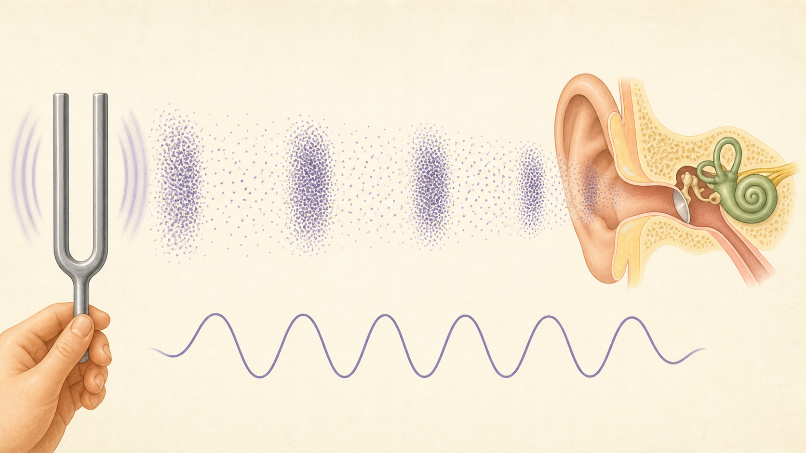
The minimum digital pipeline
06 / 93
Voice reaches the model through four conversions
Each stage changes the format while trying to preserve the linguistic and acoustic information people hear.
01
Voice
A speaker produces pressure changes.
→
02
Microphone
A sensor produces an analog signal.
→
03
Samples
An audio interface stores numbers over time.
→
04
Encoder
A neural network creates model-ready features.
What information is inside a voice?
07 / 93
A voice signal mixes several factors at once
A generation model must preserve the words while also deciding timing, speaker traits, and recording conditions.
01
Content
Phonemes and words carry the message.
02
Prosody
Timing, stress, pitch, and pauses shape delivery.
03
Speaker
Timbre and vocal habits help define identity.
04
Acoustics
Microphone, room, noise, and distance affect the signal.
Neural audio codec
08 / 93
An encoder can turn audio into compact tokens
A learned codec compresses the waveform, quantizes the hidden representation, and later reconstructs audible sound.
01
Waveform
Detailed audio samples enter the encoder.
→
02
Encoder
A neural network compresses local patterns.
→
03
Codebooks
Continuous features become discrete token IDs.
→
04
Decoder
Tokens are reconstructed as a waveform.
Continuous versus discrete audio
09 / 93
The representation changes what the generator predicts
A model can predict tiny sample values, a smooth latent, or token IDs selected from a learned codebook.
Continuous
Waveform or latent values
Precise numerical values preserve detail but may require many predictions or denoising steps.
samples · spectrogram · latent
Discrete
Neural codec tokens
A transformer can treat compressed audio units like a sequence of learned symbols.
token 418 → token 92 → token 701
One voice · three machine views
10 / 93
Waveform → spectrogram → codec tokens
Models choose a representation before they generate
The waveform keeps sample detail, the spectrogram exposes frequency structure, and codec tokens compress the sound into learnable units.
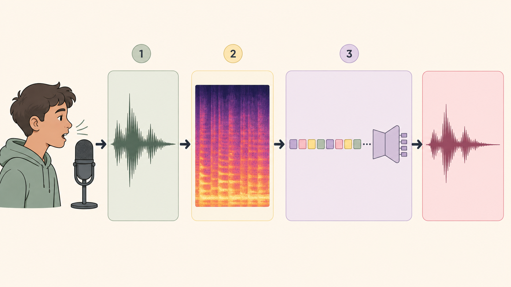
Three audio representations
11 / 93
A model can work with sound at different levels
The best representation depends on whether the system needs precise samples, visible frequency structure, or compact learnable units.
01
Waveform
A long sequence of sample values. It keeps fine detail, but is expensive to generate directly.
02
Spectrogram
A time–frequency map. It makes pitch, harmonics, and changing energy easier to model.
03
Codec tokens
A neural codec compresses audio into discrete units that a sequence model can predict.
Module 2
12 / 93
Words must become timing and sound
Generating speech
Text-to-speech systems learn how written language relates to pronunciation, rhythm, pitch, expression, and audio.
2
The text-to-speech problem
13 / 93
A TTS model predicts acoustics from text and conditions
Modern systems separate what should be said from how it should sound, then synthesize an audio representation before decoding the waveform.
01
Text
Characters or phonemes describe content.
→
02
Conditions
Voice, style, pace, language, and emotion.
→
03
Generator
Predicts spectrograms, latents, or codec tokens.
→
04
Decoder
Produces waveform samples for playback.
A conceptual text-to-speech path
14 / 93
Five connected representations
Speech generation builds several layers
Text becomes pronunciation and prosody, then an audio representation, and finally a waveform we can hear.
Three TTS architecture families
15 / 93
Different internal paths · the same audible goal
Three TTS architectures organize prediction differently
Tacotron predicts spectrogram frames in sequence, FastSpeech predicts controllable features in parallel, and codec language models predict compressed speech tokens.
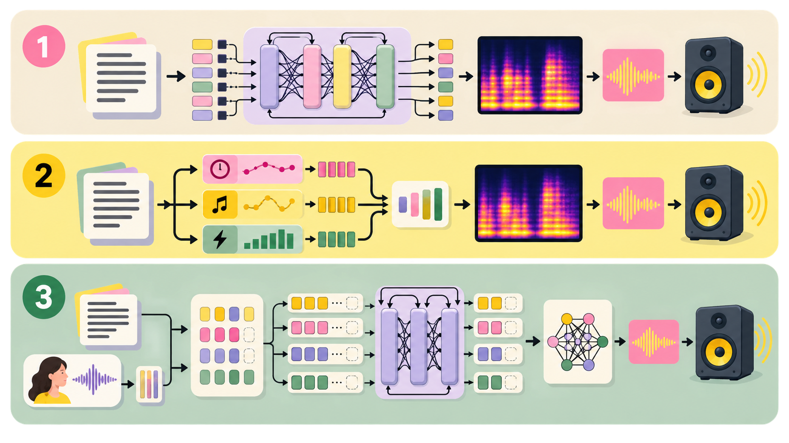
Autoregressive versus parallel TTS
16 / 93
Generation order changes speed and control
The architecture decides whether speech frames depend on earlier generated frames or can be predicted together.
Tacotron-style
Predict the next acoustic frame
Attention connects text positions to a growing spectrogram. Earlier output becomes context for the next step.
accurate alignment · slower sequential decoding
FastSpeech-style
Predict frames in parallel
Duration, pitch, and energy predictors expand text features into a full acoustic sequence at once.
faster synthesis · explicit controls
One sentence · four deliveries
17 / 93
Direct the performance
The same words can sound calm, excited, urgent, or warm
The abstract ribbons show differences in pace, intensity, pitch movement, and pauses.
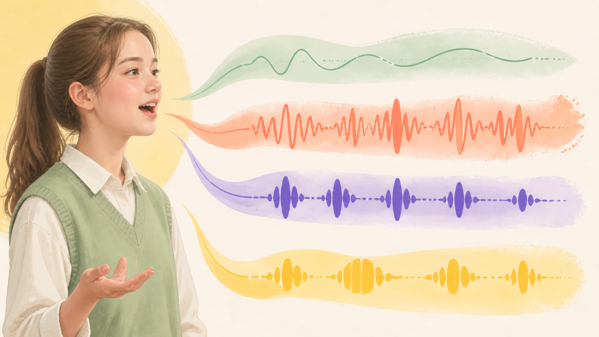
FastSpeech-style acoustic model
18 / 93
Variance predictors make speech controllable
The model combines text features with predicted duration, pitch, and energy before producing the acoustic representation.
01
Text encoder
Builds contextual phoneme features.
→
02
Duration
Expands phonemes into frame timing.
→
03
Pitch & energy
Adds prosody controls to the sequence.
→
04
Acoustic decoder
Predicts a mel spectrogram in parallel.
The final sound needs a waveform
19 / 93
Representation becomes audio
A vocoder reconstructs fine audio detail
The spectrogram describes changing frequency energy. The vocoder turns that description into waveform samples for a speaker.
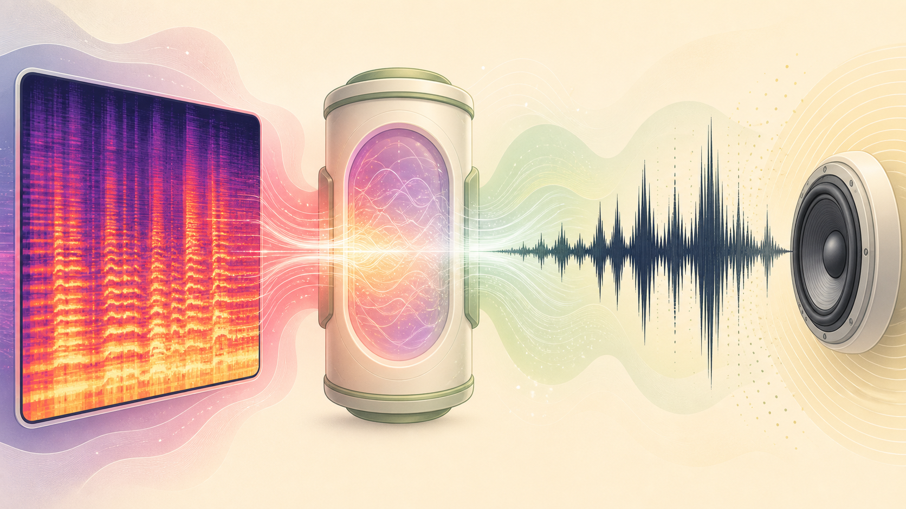
Common text-to-speech model families
20 / 93
The representation defines the prediction task
All three families begin with language and end with a waveform. What changes is the structure predicted in the middle—and whether it is generated sequentially, in parallel, or as tokens.
01
Tacotron-style
Predict the next mel-spectrogram frame from text, attention, and previously generated acoustic frames.
02
FastSpeech-style
Predict duration, pitch, energy, and many mel-spectrogram frames in parallel for speed and direct control.
03
Codec language model
Compress speech into discrete audio tokens, predict them like language, and decode the completed token stream.
Tacotron-style architecture
21 / 93
Attention aligns text with one acoustic frame at a time
Tacotron is autoregressive: each new spectrogram frame depends partly on frames already generated. This creates a flexible text-to-audio alignment, but sequential decoding can be slow and errors may accumulate.
01
Text encoder
Turns characters or phonemes into contextual language features.
→
02
Attention
Selects the text position that should influence the current sound.
→
03
AR decoder
Predicts the next mel frame using attention and earlier output frames.
→
04
Vocoder
Reconstructs waveform samples from the completed mel spectrogram.
FastSpeech removes the frame-by-frame feedback loop. A variance adaptor predicts how long, high, and energetic each sound should be, then expands the phoneme sequence before the acoustic decoder works in parallel.
01
Phoneme encoder
Builds one contextual feature vector for each input sound.
→
02
Variance adaptor
Predicts duration, pitch, and energy as controllable features.
→
03
Length regulator
Repeats phoneme features to match the required frame timing.
→
04
Parallel decoder
Predicts the full mel-spectrogram sequence without an AR loop.
→
05
Vocoder
Converts the predicted spectrogram into audible waveform samples.
Codec language model architecture
23 / 93
Speech can be generated as a hierarchy of audio tokens
A neural codec replaces dense waveform samples with compact discrete symbols. A transformer predicts these symbols using text and an optional voice prompt, then the codec decoder reconstructs speech.
01
Text & voice prompt
Text specifies content; reference audio can condition speaker identity and style.
→
02
Codec tokens
A neural encoder represents speech with several streams of learned symbols.
→
03
Token transformer
Predicts semantic and acoustic token sequences from the conditions.
→
04
Codec decoder
Combines the token streams and reconstructs the final waveform.
Module 3
24 / 93
Speech is only one kind of audio
Music & sound effects
Generative audio models learn patterns in rhythm, pitch, texture, structure, and everyday acoustic events.
3
One recording · two accurate views
25 / 93
The horizontal axis is time in both diagrams
Waveforms show amplitude; spectrograms show frequency
A waveform shows how signal amplitude changes over time. A spectrogram shows which frequencies are active at each time, while brighter color means stronger energy.
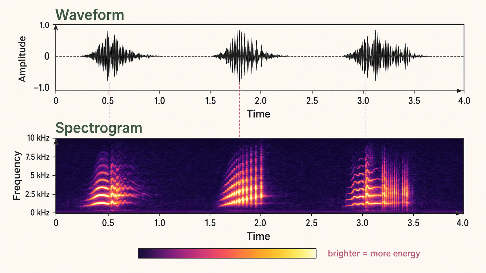
AudioLM-style hierarchy
26 / 93
Plan meaning first · add sound detail later
AudioLM predicts sound at several levels
The first tokens describe what is happening. Later token layers add speaker, instrument, texture, and fine acoustic detail before the codec reconstructs sound.
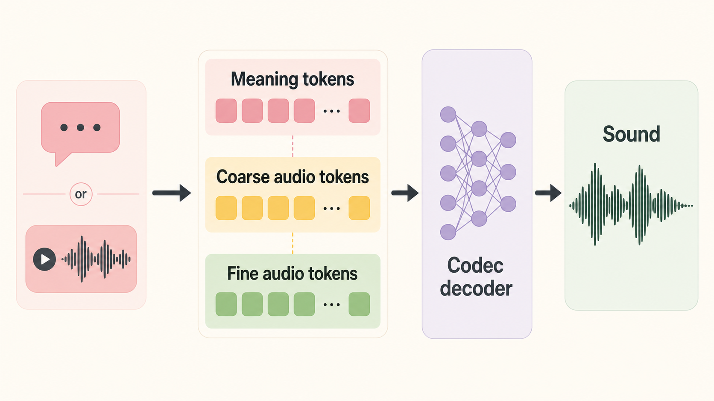
Conditioning signals for audio models
27 / 93
The generator can receive more than a text prompt
Different model families combine conditions that control content, style, structure, and timing.
01
Text embedding
Describes events, instruments, mood, or scene.
02
Reference audio
Provides voice, melody, rhythm, or acoustic style.
03
Timing controls
Specify duration, tempo, or event placement.
04
Audio context
A prefix gives the model material to continue.
A layered music metaphor
28 / 93
Separate ingredients · one experience
Pulse, melody, harmony, and texture combine
Each visual band follows its own pattern while contributing to the overall direction of the music.
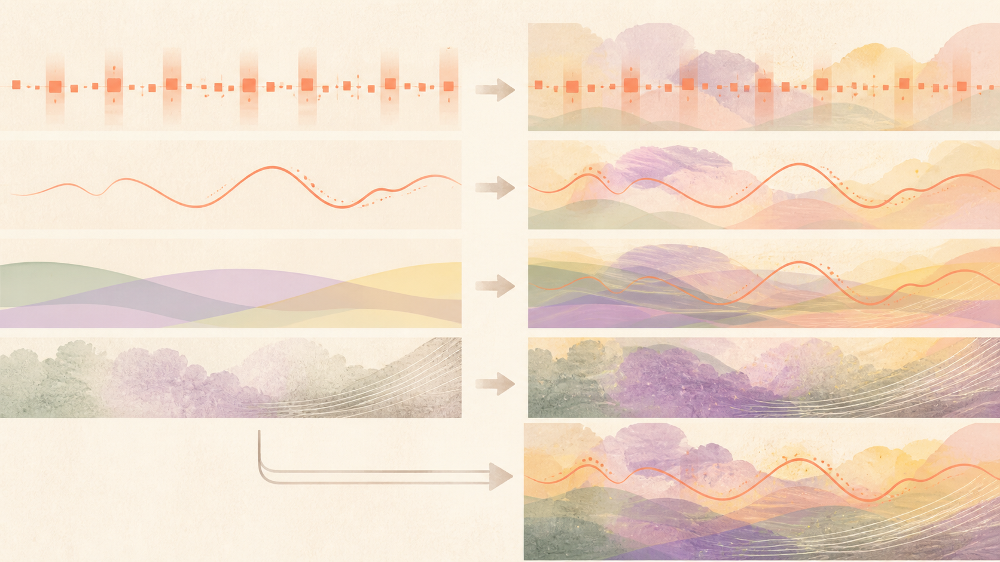
MusicLM-style generation
29 / 93
Language guides a musical plan
MusicLM separates the plan from the sound texture
A text embedding is a learned list of numbers that represents the prompt. The model plans rhythm and melody, adds instrument-level audio tokens, and decodes them into music.
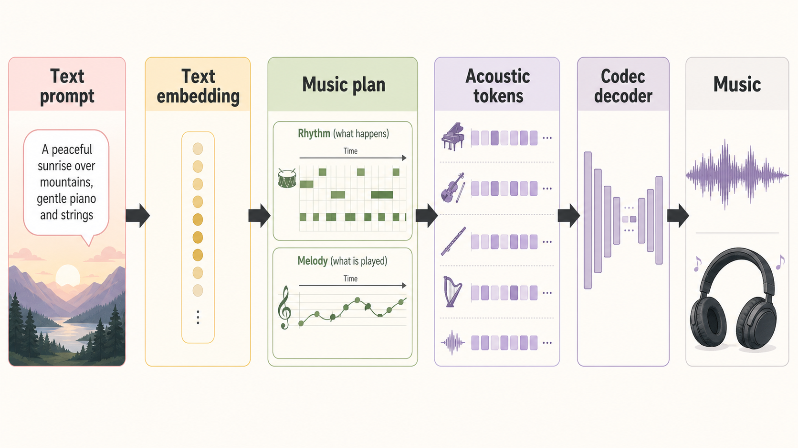
AudioLDM-style generation
30 / 93
Diffusion works on a compressed sound picture
AudioLDM cleans a noisy audio latent step by step
A latent is a smaller learned representation of sound. The model denoises that compact representation under text guidance, then a decoder reconstructs audible audio.
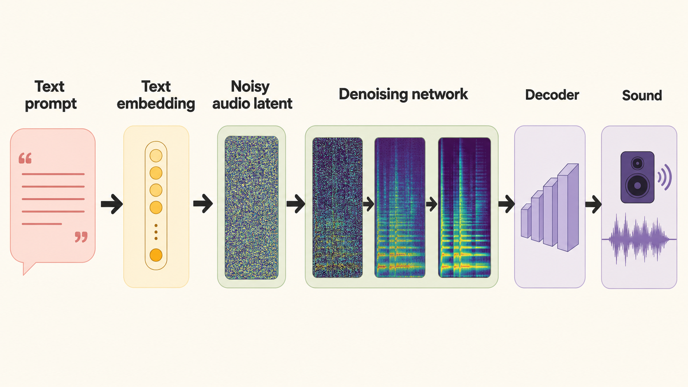
Four audio generation structures
31 / 93
Samples · tokens · hierarchies · diffusion
Audio models differ mainly in what they predict
WaveNet predicts waveform samples, AudioLM and MusicLM predict token hierarchies, and AudioLDM denoises a compact latent representation.
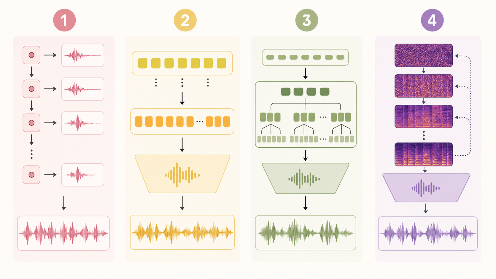
Common audio generation families
32 / 93
Three model families turn conditions into sound
Modern systems often generate a compact audio representation first, then decode it into a waveform that we can hear.
01
Autoregressive tokens
Predict one audio token after another. AudioLM is a foundational example of this sequence approach.
02
Text-to-audio tokens
AudioGen conditions a token generator on text describing events, environments, and sound sources.
03
Latent diffusion
AudioLDM repeatedly denoises a compact audio representation, then reconstructs the final waveform.
Section 1 recap
33 / 93
Audio generation must coordinate time
Speech, music, and sound effects all depend on patterns that unfold rather than appearing all at once.
01
Represent
Sound becomes samples and learned audio representations.
02
Condition
Text guides voice, mood, structure, and events.
03
Listen
Human review checks clarity, timing, quality, and purpose.
Module 4
34 / 93
A moving image is more than one picture
Video is a sequence
Video creates the experience of motion by presenting related frames across time.
4
What a video model receives
35 / 93
Video adds time to every visual representation
A generator may process full frames, compressed latent blocks, space-time patches, or discrete video tokens.
01
Pixels
Full-resolution color values preserve detail but require heavy computation.
02
Latent blocks
A video autoencoder compresses space and time before generation.
03
Space-time patches
A transformer treats small regions across several frames as units.
04
Video tokens
A tokenizer converts clips into discrete symbols for sequence prediction.
A flipbook view
36 / 93
Six moments in one run
The fox moves because pose and position advance
Each frame is still. Played quickly in order, the sequence becomes a continuous action.
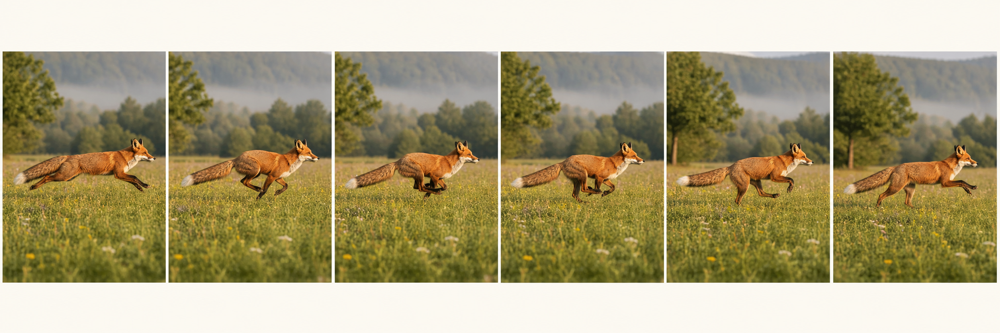
Video autoencoder
37 / 93
Compression makes video generation practical
The encoder reduces frame size and temporal redundancy, the generator works on compact latents, and the decoder reconstructs visible frames.
01
Frame sequence
A short clip contains many pixel values.
→
02
Video encoder
Compresses appearance and motion into latents.
→
03
Latent generator
Predicts a compact spatiotemporal representation.
→
04
Video decoder
Reconstructs the output frame sequence.
Motion requires change and stability
38 / 93
The subject moves while identity stays recognizable
A coherent sequence balances these two demands.
Change
Position, pose, expression
These differences create action and performance.
Stability
Identity, clothing, object structure
These similarities tell us it is the same subject.
A latent text-to-video backbone
39 / 93
Text encoder + latent video + temporal denoiser + decoder
A modern system coordinates several neural networks
Text embeddings guide a spatiotemporal denoiser, while a video autoencoder moves between compact latent blocks and visible frames.
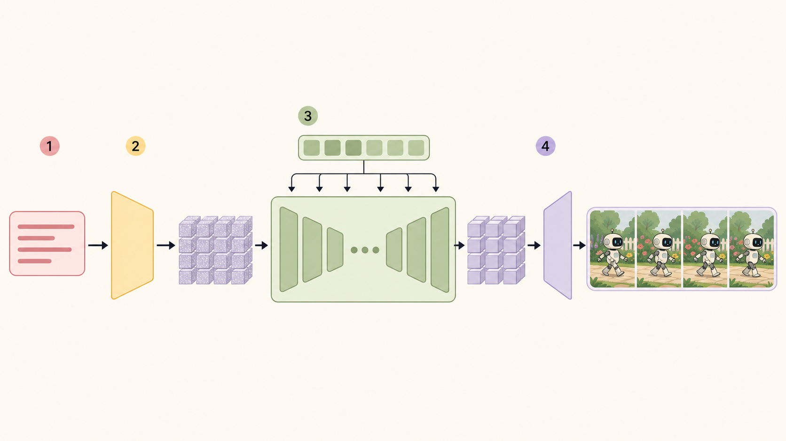
Two timelines
40 / 93
Align visible events and sound events
Audio and video must meet at the right moments
The impact frame aligns with the sharp crash. The quieter room echo continues after the glass stops moving.
Video adds a time dimension
41 / 93
A video is a stack of image tensors
An image stores height, width, and color channels. Video adds a sequence of time steps, so the model must learn both appearance and change.
01
Frame
One image at one moment.
→
02
Frame stack
T × H × W × C values.
→
03
Spatial patterns
Objects, texture, and layout.
→
04
Temporal patterns
Motion, rhythm, and continuity.
Module 4 recap
42 / 93
Video adds a time dimension to image generation
The model must coordinate appearance, movement, camera, and sound across many frames.
01
Frames
Individual images provide spatial detail.
02
Motion
Changes between frames create action.
03
Continuity
Stable relationships make the sequence believable.
Module 5
43 / 93
The image-generation idea expands through time
Generating video
A video model can begin with noise and repeatedly predict changes that make an entire sequence more coherent.
5
Text-to-video starts with a scene condition
44 / 93
Words guide appearance and movement
The prompt describes what happens—not only what exists.
A video prompt needs subjects, actions, environment, camera behavior, pacing, and often an audio plan.
Scene + action + time
The networks inside video diffusion
45 / 93
One video generator is usually a system of models
The text encoder, video autoencoder, denoiser, and sampler each solve a different part of generation.
01
Text encoder
Converts words into conditioning vectors.
02
Video VAE
Compresses and reconstructs frame sequences.
03
Denoiser
Predicts noise or velocity in latent space.
04
Sampler
Turns many denoising predictions into a trajectory.
A high-level video diffusion path
46 / 93
Space and time are processed together
Repeated denoising organizes appearance and motion
Each block contains several frames. The airplane, its trajectory, and the sky become coherent across the whole sequence.
Noise becomes a moving scene
47 / 93
Structure arrives before fine detail
Shape, trajectory, and background emerge together
The paper airplane becomes recognizable while its direction and surrounding sky stabilize across frames.
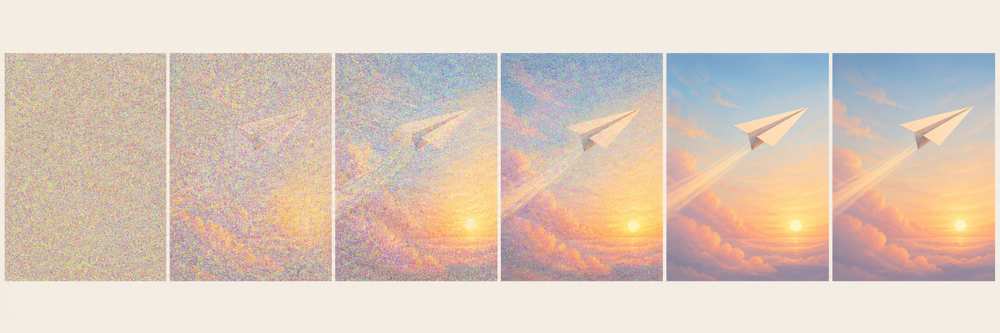
Inside the spatiotemporal denoiser
48 / 93
Space answers where · time answers when
One block sees each frame; another connects time
The spatial block finds objects and shapes inside each frame. The temporal block links the same subject across frames, while text guidance keeps the result connected to the prompt.
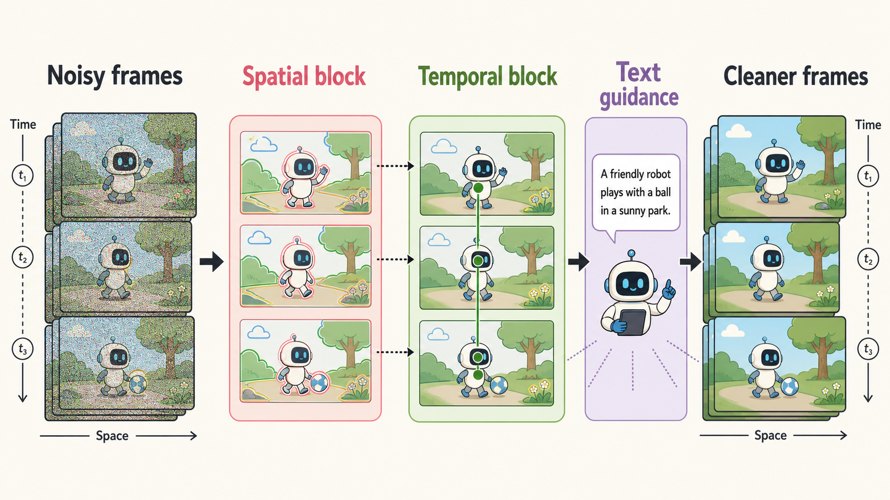
Two denoiser backbones
49 / 93
Two structures · the same denoising job
U-Nets use an hourglass; Transformers use patch tokens
A U-Net compresses and expands features while carrying detail through skip connections. A Diffusion Transformer mixes video patch tokens through repeated attention blocks.
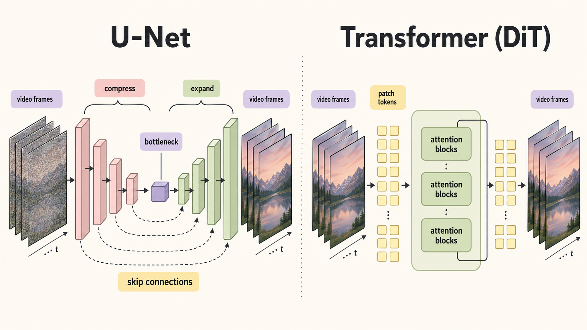
Inside a modern text-to-video system
50 / 93
Generation usually happens in compressed video space
Text guides a denoising network while a video autoencoder keeps the computation smaller than working with every pixel directly.
01
Text encoder
Turns the prompt into meaning vectors.
→
02
Noisy latent video
Starts as compact random values.
→
03
Video denoiser
Predicts spatial and temporal corrections.
→
04
Video decoder
Reconstructs visible frames.
Module 5 recap
51 / 93
Video generation predicts a connected sequence
Text conditions the scene while denoising organizes visual values across space and time.
01
Describe
Define subject, action, setting, and camera.
02
Generate
Build a sequence through repeated predictions.
03
Inspect
Check identity, motion, lighting, and timing.
Module 6
52 / 93
The hardest errors may appear between frames
Temporal coherence
A coherent video feels like one continuous world rather than a pile of unrelated images.
6
A definition for video
53 / 93
Relationships survive through time
Temporal coherence means the sequence agrees with itself.
Subjects retain identity, objects follow understandable paths, backgrounds remain stable, and lighting changes for a reason.
Use the formula as a checklist, then include only the details that clarify the intended scene.
Specific enough to guide · simple enough to follow
Text conditioning through cross-attention
63 / 93
Each visual feature looks for useful words
Cross-attention connects prompt words to the scene
Prompt words become tokens. Visual features compare themselves with those tokens and pull in the words that matter—for example, “red” for the robot and “garden” for the background.
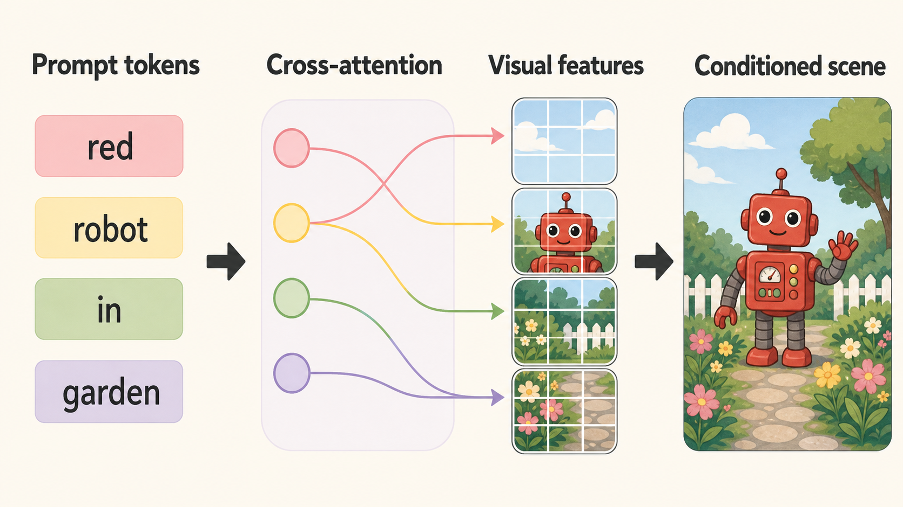
Camera language changes meaning
64 / 93
Same robot · different attention
Wide, medium, close, and top-down views tell different stories
Camera distance and angle decide whether viewers notice the world, the action, the emotion, or the spatial pattern.
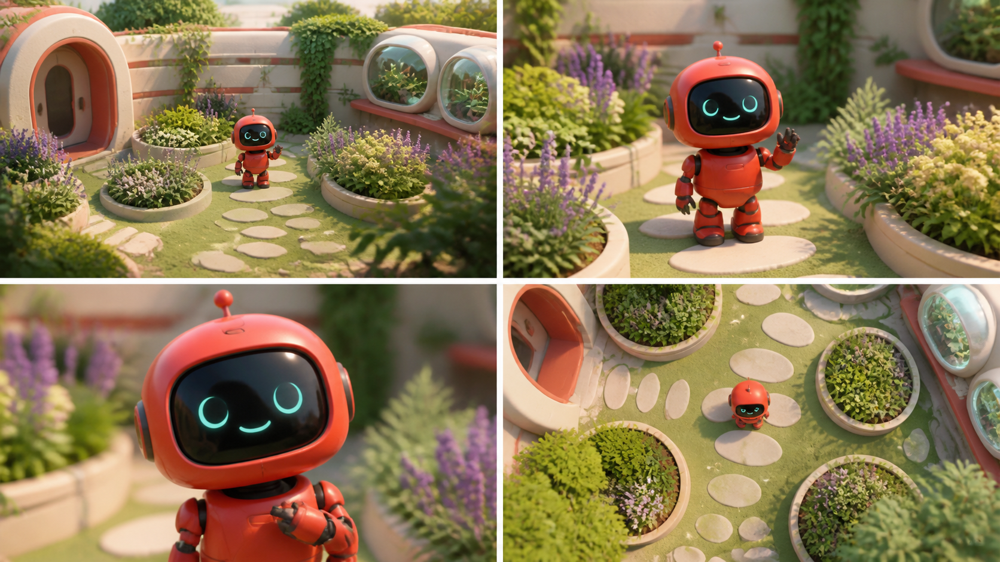
Four useful camera directions
65 / 93
Simple film language creates clearer prompts
Use one camera choice when it helps the audience understand the scene.
01
Static
The camera stays still while action unfolds.
02
Tracking
The camera travels with a moving subject.
03
Pan
The camera turns to reveal or follow.
04
Push in
The camera moves closer to increase focus.
Classifier-free guidance
66 / 93
Guidance controls how strongly the model follows the condition
The denoiser combines a conditional prediction with an unconditional prediction. The scale changes the balance between prompt fidelity and natural variation.
Lower guidance
More variation and softer prompt pressure
Motion may look natural, but specific details can drift from the condition.
diverse samples · weaker control
Higher guidance
Stronger prompt alignment
Requested details become clearer, but extreme values can create artifacts or reduce diversity.
clearer condition · possible distortion
Image-to-video conditioning
67 / 93
The first frame provides a strong visual anchor
The reference image supplies identity and composition; motion and camera conditions describe how the latent sequence should evolve.
01
Reference frame
Anchors appearance and scene layout.
→
02
Image embedding
Encodes identity and visual features.
→
03
Motion condition
Specifies movement, camera, or frame rate.
→
04
Video diffusion
Generates later frames around the anchor.
Control signals beyond text
68 / 93
Modern generators can combine several conditions
Extra inputs reduce ambiguity by constraining identity, geometry, motion, or timing.
01
Image reference
Anchors subject appearance and composition.
02
Depth or edges
Constrains scene geometry and object boundaries.
03
Pose or trajectory
Guides body movement and spatial paths.
04
Audio or timing
Aligns lip motion, beats, or event boundaries.
Three video generation tasks
69 / 93
The input determines how much the model must invent
More visual conditioning usually gives stronger control over identity, composition, and motion.
01
Text-to-video
A text prompt specifies the scene, action, camera, and style; the model invents the visual starting point.
02
Image-to-video
A reference image anchors appearance while the model creates motion and later frames.
03
Video-to-video
An input clip supplies timing and motion while generation changes style, subject, or detail.
Module 8
70 / 93
Several generators can work as one system
Multimodal generation
A complete media system may connect language, image, video, speech, music, and sound-effect models through shared conditions and a synchronized timeline.
8
One story · several media
71 / 93
Each layer answers a different question
The layers feel coherent when they support the same purpose and timeline.
01
Script
What information or dialogue matters?
→
02
Visual
What should viewers see?
→
03
Motion
What changes through time?
→
04
Audio
What should viewers hear and feel?
Shared conditioning
72 / 93
One script can become conditions for several generators
A planning model or human-authored script provides aligned descriptions so separate media models create compatible outputs.
01
Scene plan
Defines shots, timing, characters, and events.
→
02
Visual prompts
Condition image and video generators.
→
03
Speech prompts
Specify words, voices, and delivery.
→
04
Audio prompts
Specify music, effects, and timing.
Visual planning
73 / 93
Establish → develop → resolve
A storyboard turns the script into shots
The wide shot introduces the room, the medium shot shows the door opening, and the close-up reveals the discovery.
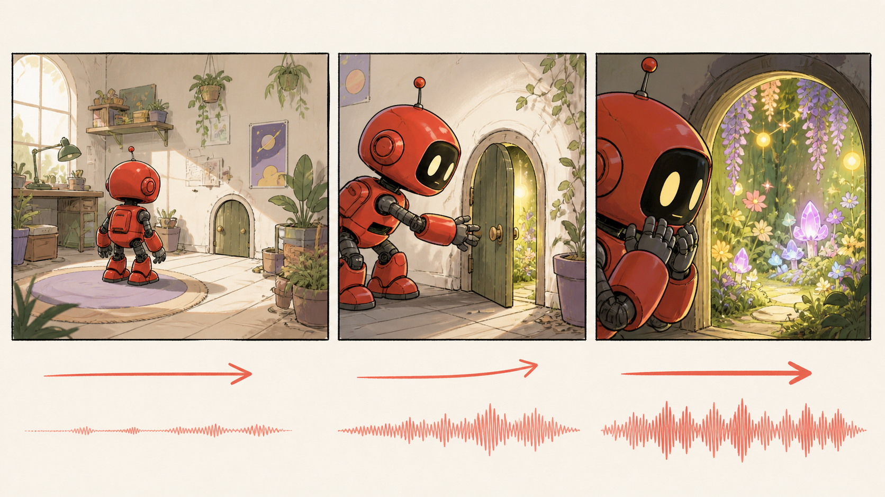
Synchronizing model outputs
74 / 93
Generated layers need a shared clock
The system aligns representations so visual events, speech, effects, and music reach the same moments.
01
Timestamps
Place speech words and sound events on the timeline.
02
Frame indices
Connect motion and visual events to exact frames.
03
Beats & phonemes
Provide fine timing for music and lip movement.
04
Shared metadata
Carries character, location, mood, and shot identity.
Two multimodal system designs
75 / 93
Media can be generated jointly or assembled as a pipeline
Joint models share representations internally; modular pipelines connect specialized generators through prompts, references, and timing.
Joint model
One network learns several media together
Shared features can improve cross-modal alignment, but training and control are complex.
shared tokens · shared transformer
Modular pipeline
Specialized models exchange conditions
Components are easier to replace and inspect, but outputs must be synchronized carefully.
TTS + video + music + renderer
Influential video model lineages
76 / 93
Several research systems shaped modern video generation
These examples are not identical products; they show how the field developed ideas for motion, scale, text guidance, and latent video.
01
Video Diffusion Models
Extended image diffusion into time and demonstrated joint modeling of frames.
02
Make-A-Video
Combined image-text knowledge with unlabeled video to learn what scenes look like and how they move.
03
Imagen Video
Used a cascade of diffusion models to increase temporal and spatial resolution.
04
Stable Video Diffusion
Scaled latent video diffusion and supports image-conditioned video generation.
Module 8 recap
77 / 93
A story is a system of timed relationships
Multimodal creation works when each medium contributes something useful rather than repeating everything.
01
Plan
Give the scene one central change.
02
Coordinate
Align script, shots, motion, and sound.
03
Focus
Remove layers that do not serve the story.
Module 9
78 / 93
Models learn first, then generate
Training, inference & evaluation
Training teaches a network to predict missing structure. Inference applies that learned prediction repeatedly, and evaluation measures quality, control, coherence, and speed.
9
A generic training loop
79 / 93
Predict · compare · update · repeat
Training changes the model after every measured error
The model makes a prediction, compares it with the target, and measures the difference. That error sends an update back into the model so the next prediction can improve.
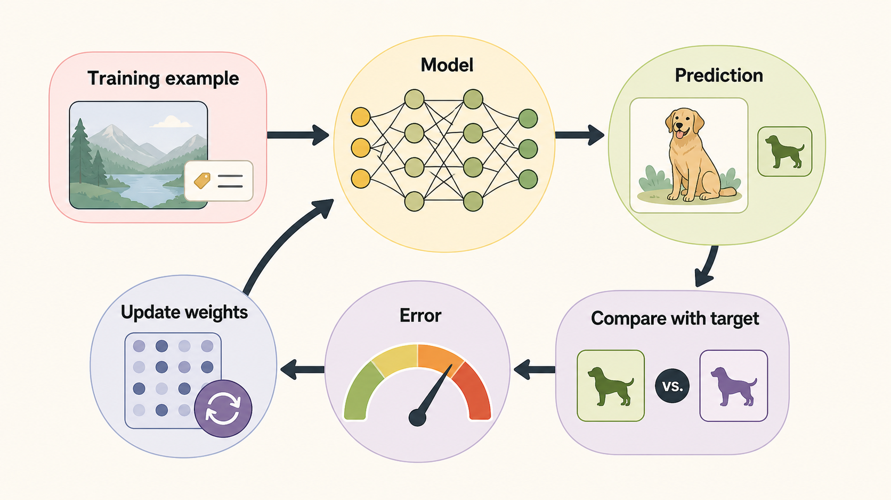
Training data structures
80 / 93
Different supervision teaches different abilities
The model architecture and objective determine which datasets are useful and what controls the final system can understand.
01
Paired text–media
Captions teach relationships between language and audio or video.
02
Unlabeled media
Large audio or video collections teach natural structure and motion.
03
Reference pairs
Related clips or voices teach transformation and conditioning.
04
Curated examples
Filtering improves relevance, quality, and representation.
Common learning objectives
81 / 93
Each model learns a different prediction game
The loss function tells the network which error to reduce during training.
01
Noise prediction
Diffusion learns the noise or velocity needed to reverse corruption.
02
Next-token prediction
Autoregressive models learn the next codec or video token.
03
Reconstruction
Autoencoders learn to compress media while preserving important detail.
04
Condition alignment
Text and reference signals must influence the correct content.
Evaluation is multi-dimensional
82 / 93
A model can improve one metric and weaken another
Useful evaluation combines automated measures with listening, viewing, and task-specific human judgments.
01
Fidelity
Does the output sound or look realistic and detailed?
02
Condition match
Does it follow the text, reference, timing, or motion control?
03
Temporal coherence
Do identity, motion, and audio remain consistent through time?
04
Efficiency
How much memory, computation, and waiting time are required?
Training versus inference
83 / 93
Learning weights and generating media are different processes
Training is expensive and repeated across huge datasets. Inference keeps the weights fixed and uses them to produce one requested output.
Training
Predict, measure error, update weights
Many examples teach the model general patterns and conditioning relationships.
data → loss → gradient → new weights
Inference
Start from context or noise, then sample
Prompts, references, seeds, and guidance control one generation run.
condition → predictions → media
A multimodal generation stack
84 / 93
A short scene may use several specialized models
The components can be generated separately, aligned on a shared timeline, and rendered into one experience.
01
Script & timing
Words and shot durations define structure.
→
02
Video model
Generates visual frames and motion.
→
03
Audio models
Create speech, music, and effects.
→
04
Timeline & renderer
Aligns layers and exports the scene.
Inference controls
85 / 93
Small settings can change the generated result
These controls affect speed, prompt strength, diversity, and the amount of temporal detail without retraining the model.
01
Seed
Chooses the initial noise pattern. Reusing it can make comparisons more controlled.
02
Sampling steps
More denoising steps may improve refinement, but they increase generation time.
03
Guidance
Higher guidance follows the condition more strongly, but extreme values can reduce natural variation.
04
Frames & resolution
Longer, faster, or larger videos require more memory and more computation.
Module 10
86 / 93
Different media need different generation engines
Model architectures & practical limits
Speech, music, sound effects, and video can use diffusion, autoregressive prediction, neural codecs, transformers, or combinations of several techniques.
10
Two major generation strategies
87 / 93
Refine everything · or extend a sequence
Diffusion and autoregressive models build media differently
Diffusion improves a whole noisy structure over several steps. An autoregressive model predicts the next token using the tokens that came before it.
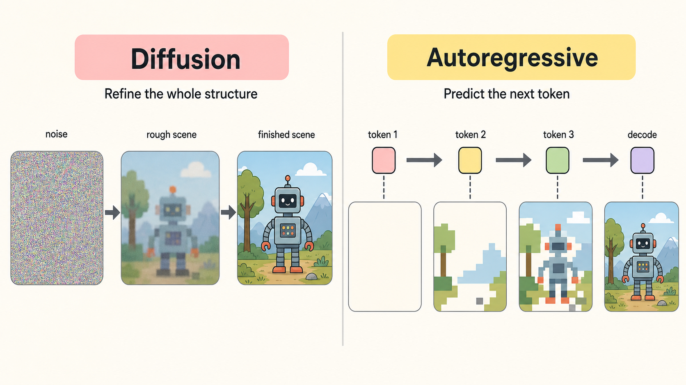
Model map · speech
88 / 93
Match each speech model to its main prediction idea
This recap connects model names to the visual architectures introduced earlier. Focus on what each system predicts in the middle of the pipeline.
01
Tacotron 2
Predicts mel-spectrogram frames one after another, then uses a vocoder to make sound.
02
FastSpeech 2
Predicts timing, pitch, energy, and speech frames in parallel.
03
VALL-E
Predicts discrete speech tokens using a language-model-like Transformer.
04
NaturalSpeech 2
Uses diffusion to refine a compact latent representation of speech or singing.
Model map · audio
89 / 93
Match each audio model to the representation it predicts
The model name matters less than the prediction target: samples, token layers, music tokens, or a compressed latent.
01
WaveNet
Predicts the next raw waveform sample from earlier samples.
02
AudioLM
Predicts meaning tokens first, then coarse and fine audio tokens.
03
MusicLM
Predicts a musical plan and then detailed acoustic token streams.
04
AudioLDM
Starts with a noisy audio latent and refines it under text guidance.
Video generation architecture families
90 / 93
Pixels · latents · cascades · tokens
Four structures can generate the same moving scene
Pixel diffusion denoises frames directly, latent diffusion works in compressed space, cascades add resolution in stages, and token transformers predict discrete video units.
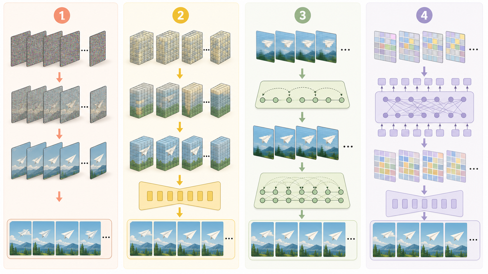
Technical trade-offs
91 / 93
No model wins every dimension at once
Understanding the trade-offs helps explain why short clips and carefully constrained generations are often more reliable.
01
Quality vs. speed
More computation can improve detail, but generation becomes slower and more expensive.
02
Duration vs. consistency
Longer sequences give more opportunities for identity, motion, or scene structure to drift.
03
Control vs. diversity
Strong conditioning narrows the result; weaker conditioning leaves more room for variation.
04
Compression vs. detail
Latent and codec representations save computation, but must preserve the details people notice.
Day 4 knowledge check
92 / 93
Can you explain the complete media pipeline?
Use one short scene to connect representation, conditioning, generation models, temporal coordination, and revision.
01
Represent
Sound becomes samples or tokens; video becomes frames or latents.
02
Condition
Prompts and references guide voice, action, camera, style, and audio.
03
Generate
Diffusion or autoregressive models predict the media representation.
04
Refine
People compare outputs, tune settings, coordinate layers, and revise.
Day 4 finale
93 / 93
Different models contribute different strengths
Sound and motion become stories through coordinated generation.
Speech, music, effects, images, and motion may come from different model families. The final experience depends on how their outputs are directed, aligned, and revised.